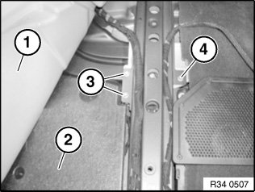
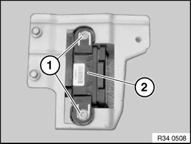

34 52 550 Removing and Installing/Replacing DSC Sensor
34 52 550 Removing and installing / replacing DSC sensorImportant!
Read and comply with notes on protection against electrostatic discharge (ESD protection).
Necessary preliminary tasks:
^ Remove left front seat
^ Remove front left entrance cover strip
Lift carpet (1) and fold back to side.
Remove underlay (2).
Disconnect plug connection.

Installation:
Ensure proper locking of plug connector.
Slacken screws (3)
Release screws (4) and remove bracket with yaw sensor.
Installation:
Tightening torque 34 51 3AZ.

When replacing DSC sensor:
Release screws (1) and modify DSC sensor (2).
Installation:
Tightening torque 34 51 2AZ.
Carry out calibration/adjustment of DSC sensor.